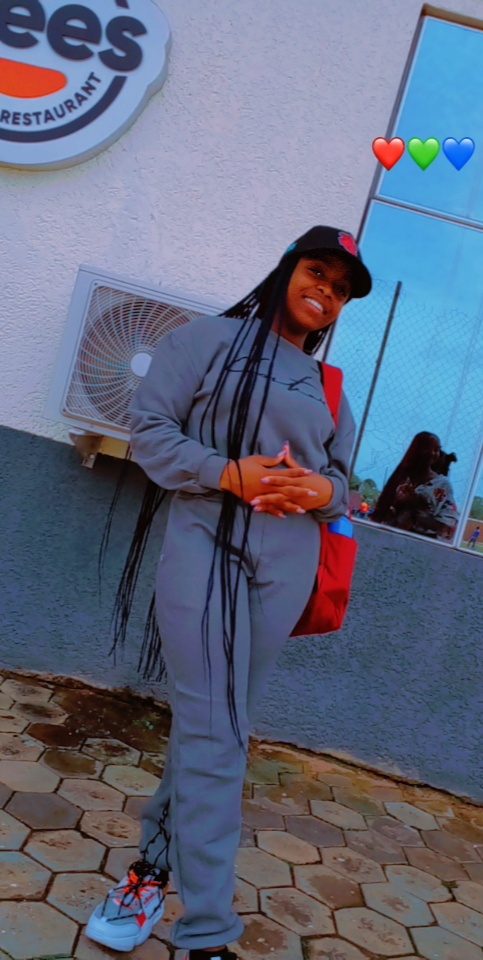

MY CSC 102 PROJECT
Good day class. I am Toyin Bello. I am yoruba by tribe from Ogun state. I am the last born of our family. Born and brought up in Jos. I attended Adonai Vine School Jos. I was a boarding student. I am currently studying software engineering at Lead City University .
I want to become a software engineer because computer and data processing were my best subjects in secondary school and i honestly did not like any other subject while in school even till now.
To be honest, I don't like stress at all and I enjoy staying indoors and snacking while on my bed all day long. I love watching movies and reading novels. P.s- my favorite novel so far has to be married to the devils son.